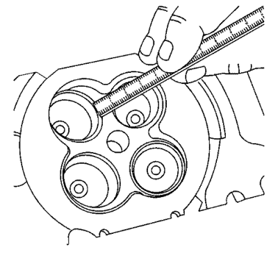
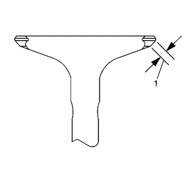
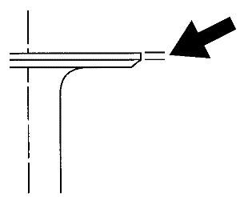
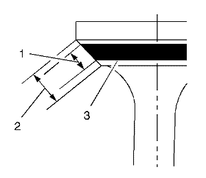
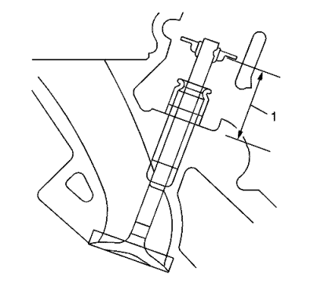

Rectificación del asiento y de la válvula
Procedimiento de limpieza de la válvula
- Utilice un cepillo de cerdas de alambre suaves para limpiar cualquier acumulación de carbonilla de la cabeza de la válvula. NO utilice un cepillo de alambre en ninguna parte del vástago de la válvula. El vástago de válvula está cromado para proporcionar mejores características de desgaste. Al utilizar un cepillo de alambre se podría desprender el cromado.
- Limpie a fondo la válvula con disolvente y séquela.
Procedimiento de revisión visual de la válvula

- Revise la válvula íntegramente en busca de daños y de los siguientes problemas:
| • | Corrosión en el área de asentamiento de la válvula (1) |
| • | Ausencia de margen en la válvula (2) |
| • | Vástago de la válvula curvado (3) |
| • | Corrosión o desgaste excesivo del vástago (4) |
| • | Ranuras de la llave de válvula desgastadas (5) |
| • | Punta de la válvula desgastada (6) |
- Si observa alguno de estos problemas, sustituya la válvula.
Panorámica de la medición y el reacondicionamiento de la válvula
Nota: Para garantizar que el motor funcione correctamente, se debe seguir los procedimientos de reacondicionamiento y medición mostrados a continuación.
- La reparación adecuada de la válvula es esencial para el funcionamiento del motor. Por ello, se deben seguir los procedimientos de medición que se detallan para identificar los componentes que no se encuentran dentro de la especificación.
- Si los procedimientos de medición indican que la válvula o el área de asentamiento de la válvula deben reacondicionarse, es de vital importancia que se realicen los procedimientos de medición después del reacondicionamiento.
Procedimiento de medición de la anchura del asiento de la válvula

- Con una regla apropiada, mida la anchura del asiento de la válvula de la culata.

- Con una regla apropiada, mida la anchura del asiento de la parte frontal de la válvula (1).
Nota: La zona de contacto del asiento debe ser de al menos 0,5 mm (0,020 pulg.) desde el diámetro exterior (margen) de la válvula. Si la zona de contacto está demasiado cerca de los márgenes, se deberá reacondicionar el asiento para separar la zona de contacto del margen.
- Compare sus mediciones con las especificaciones que se enumeran en Especificaciones mecánicas del motor : LF1 .
- Si la anchura de los asientos es aceptable, compruebe la redondez del asiento de válvula mediante el procedimiento de medición de redondez del asiento de válvula.
- Si la anchura del asiento no es aceptable, deberá rectificar el asiento de válvula mediante el procedimiento de reacondicionamiento de la válvula y el asiento para que la anchura se ajuste a lo estipulado. Una anchura adecuada del asiento de válvula es vital para que se proporcione la cantidad apropiada de disipación de calor en la válvula.
Procedimiento de medición de la redondez del asiento de válvula
- Mida la redondez del asiento de válvula con un dispositivo de medición unido a un piloto cónico instalado en la guía. El piloto deberá tener una ligera sujeción cuando se instale en la guía.
Atención: Debe utilizarse el piloto de tamaño correcto. No utilice pilotos de diámetro regulable. Los pilotos regulables pueden dañar las guías de válvula.
- Compare sus mediciones con las especificaciones que se enumeran en Especificaciones mecánicas del motor : LF1 .
- Si el asiento de válvula supera la especificación de redondez, deberá rectificar la válvula y el asiento de válvula mediante el procedimiento de reacondicionamiento de la válvula y el asiento.
- Si se están utilizando válvulas nuevas, la redondez del asiento de válvula deberá estar dentro de un valor de 0,05 mm (0,002 pulg.).
Procedimiento de medición del margen de la válvula

- Mida el margen de la válvula con una regla apropiada.
- Consulte las especificaciones de esta sección acerca del valor mínimo del margen y compárelas con sus mediciones.
- Si los márgenes de la válvula superan las especificaciones, sustituya las válvulas.
- Si los márgenes de la válvula se encuentran dentro de los valores indicados en las especificaciones y no necesitan rectificación alguna, compruebe la concentricidad del asiento mediante el procedimiento de medición de la concentricidad de la válvula hasta el asiento.
Procedimiento de medición de la concentricidad de la válvula hasta el asiento
Nota:
| • | La comprobación de la concentricidad de la válvula hasta el asiento determina si la válvula y el asiento están correctamente cerrados. |
| • | Deberá medir la cara de la válvula y el asiento de la válvula para garantizar el cierre adecuado de la válvula. |

- Recubra ligeramente la cara de la válvula con tinte azul (3).
- Monte la válvula en la culata.
- Gire la válvula contra el asiento, ejerciendo la suficiente presión como para retirar el tinte.
- Desmontar la válvula de su ubicación en la culata.
- Revise el lado de la válvula.
| • | Si la cara de la válvula es concéntrica respecto al vástago de válvula y permite un sellado adecuado, se hará una marca continua alrededor de toda la cara (1). |
| | Nota: La marca de desgaste del asiento DEBE estar al menos 0,5 mm (0,020 pulg.) del diámetro exterior, el margen, de la válvula. Si la marca de desgaste está demasiado cerca del margen, se deberá reacondicionar el asiento para separar la zona de contacto del margen. |
| • | Si la cara no es concéntrica respecto al vástago, la marca alrededor de la cara de la válvula NO será continua. Se deberá rectificar o sustituir la válvula, y se deberá reacondicionar el asiento mediante el procedimiento de reacondicionamiento del asiento. |
Procedimiento de reacondicionamiento de la válvula y el asiento.

Nota:
| • | Si la anchura, redondez o concentricidad del asiento de válvula supera el valor de las especificaciones, deberá rectificar los asientos para asegurar una disipación de calor adecuada y evitar la acumulación de carbón en los asientos. |
| • | Si se requiere el reacondicionamiento del asiento, será necesario rectificar la válvula, a menos que se utilice una válvula nueva. |
- Rectifique los asientos de válvula (2) hasta alcanzar la especificación de ángulo correcta indicada en Especificaciones mecánicas del motor : LF1 .
- Conforme a la especificación de ángulo correcta indicada en Especificaciones mecánicas del motor : LF1 , rectifique y alise los asientos de válvula (1) para colocar correctamente la superficie de asiento de la válvula (2) en la misma.
- Conforme a la especificación de ángulo correcta indicada en Especificaciones mecánicas del motor : LF1 , rectifique y rebaje los asientos de válvula (3) hasta alcanzar la anchura de los asientos de válvula de las especificaciones indicadas en Especificaciones mecánicas del motor : LF1 .
- Si se está utilizando la válvula original, rectifique la válvula hasta alcanzar las especificaciones que se indican en Especificaciones mecánicas del motor : LF1 . Vuelva a medir el margen de la válvula después de realizar la rectificación mediante el procedimiento de medición del margen de la válvula. Sustituya la válvula si el valor del margen está fuera de la especificación. Las válvulas nuevas no requieren rectificación.
- Cuando rectifique las válvulas y asientos, esmerile la mínima cantidad posible de material. El corte del asiento de válvula se traduce en una disminución de la presión del muelle de la válvula.
- Monte la válvula en la culata.
| • | Si está utilizando válvulas rectificadas, esmerile las válvulas con un compuesto de esmerilado fino. Tras las operaciones de rectificación y asentamiento, las superficies rectificadas deberán quedar lisas y exactas, de forma que se requiera un grado de lapeado mínimo. Un lapeado excesivo ranurará la cara de la válvula e impedirá un asiento adecuado cuando esté caliente. |
| | Nota: Asegúrese de limpiar cualquier material de pulido que haya quedado en la válvula y el asiento con disolvente y aire comprimido antes del montaje final. |
| • | Si está utilizando válvulas nuevas, no esmerile las válvulas bajo ningún concepto. |
- Después de obtener la anchura adecuada del asiento de válvula de la culata, deberá volver a medir la altura del vástago de válvula mediante el procedimiento de medición de la altura del vástago.
- Si la altura del vástago de válvula es aceptable, compruebe la concentricidad mediante el procedimiento de medición de la concentricidad desde la válvula hasta el asiento.
Procedimiento de medición de la altura del vástago de válvula.

Nota: Para determinar la altura del vástago de válvula, mida desde el asiento del muelle de la válvula hasta el soporte del asiento del muelle.
- Monte la válvula en la guía de válvula.
- Asegúrese de que la válvula está acoplada al asiento de válvula de la culata.
- Monte el retén de aceite del vástago de válvula.
- Monte el seguro del muelle de la válvula y las cerraduras del vástago de válvula.
- Mida la distancia (1) comprendida entre la culata y la parte inferior del seguro del muelle de la válvula. Consultar Especificaciones mecánicas del motor : LF1 .
- Si se supera la especificación de altura máxima, deberá instalarse una válvula nueva y volverse a medir la altura del vástago de válvula.
Precaución: NO rebaje la punta del vástago de la válvula. La punta de la válvula es de un material templado que, si se rebaja, perderá su dureza dando lugar a un desgaste prematuro del componente y posibles daños en el motor.
Precaución: :NO use arandelas de compensación para ajustar la altura del vástago de válvula. El uso de piezas de apriete provocará que el muelle de la válvula llegue al tope antes de que el lóbulo del árbol de levas llegue al máximo, lo que podría dañar el motor.
- Si la altura del vástago de válvula supera la especificación máxima de altura, deberá sustituirse la culata.
| © Copyright Chevrolet Europe. All rights reserved |